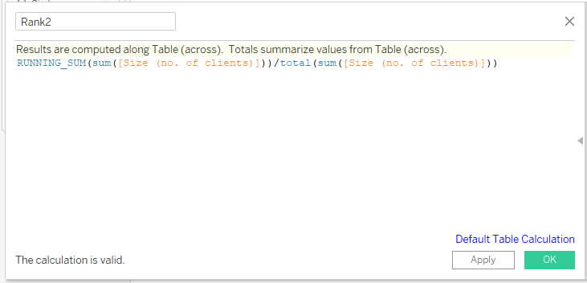

A Sankey diagram is a data visualization technique that shows flow from one point to another. The flows help show connections between a beginning and a possible end.
This week’s MakeoverMonday challenge focused on the housing outcomes of clients of the Australian Specialist Homelessness Services. Clients could go from one housing situation to a multitude of other housing situations. Because of this, I decided to make use of a Sankey chart to show where the flows were going.
This became a bit of a challenge because the tutorials I saw on how to make one in Tableau seemed to reference features that Tableau Desktop would have but not Tableau Public.
However, I got one to work and I will show you how I made it!
Creating a Sankey Chart
The most crucial part in creating this diagram is dealing with the source data itself. Because the data needs to flow from one area to another, we need to tell Tableau to understand that within the same data set. For that reason, I dragged and dropped the Data sheet into the box below.
I
The next step is to then drag and drop over that same sheet again to Union it with the first one. I then edited the connection to make sure it created a union. This creates a new column that will differentiate “Data” and “Data1.”
From here, I went into the worksheet and started creating some calculated fields.
Creating the Curve of the Sankey Chart
This first one will help build a flow pathway between the “two” data sources. This calculated field will separate the “two” by assigning them to a number. This says if it exists in the one data set, then it’ll be assigned a 1. If not, then it’ll be assigned a 49. In the end this field won’t be on any shelf for the data visualization, but it’ll help us build the curve with subsequent calculated fields.
After I created this calculated field, I then right clicked to create a bin to essentially build a bridge between 1 and 49, the two data sets.
What this will do is not only have 1 to 49 between the two data sets but it’ll also put numbers in between to help build that “bridge.”
This next part here might look like random things are being done, but actually we will be utilizing a mathematical function to build all the curved lines between the two data sets. This calculated field is part of that formula and will help space everything out, much like how I did for my jitter plot tutorial post.
Here is the function we are trying to simulate. It’s called Sigmoid function, and as you’ll see in the next couple steps, it uses t from the calculated field that was just created. This will create the “S” shape between the two data sets.
Here is how that function plays out in Tableau when we create yet another calculated field.
Next, we need to rank each data set, so the Sigmoid function knows to flow from one point to another point.

Now we can finally build the curve with all the different parts.
Refining the Curve for the Sankey Chart
Drag Padded to the details on the marks card and drag t to the columns shelf. Right click to Compute Using > Padded. Drag Curve to the rows shelf. As you can see, we’re finally getting somewhere!
Right click on either t or Curve and go to Edit Table Calculation. This will open up a prompt where you can specify how the calculations are done. This first one shows that Rank1 will be computed using Specific Dimensions such as Client situation at first presentation, Client situation at end of support, and Padded.
The little drop down arrow next to Rank1 will then let you go to the next nested calculation to configure Rank2. Rank2 will be computing the same things as Rank1. And here is what the nested calculation t will need.
Formatting
Now for my favorite part, formatting things and making it all come to life.
We can right click and edit the axis on t and Curve to clean things up a little bit.

Now, we want the data to show lines, not circles. To do that, we will need to change the marks to be lines and then drag the Padded bin to path. As you recall, that Padded pill had data points from 1 to 49 all spaced out. Now this creates that same bridge, but as lines.
Here I created yet another calculated field because I want these lines to be thicker or thinner based on the number of clients that follow that path.
Here’s how to put that calculated field to work.
Then we can go to the change the size on the marks card.
Creating the Pillar Columns
This next part involves additional worksheet tabs. I wanted to create a couple columns to go on each side of the Sankey diagram. One column will show the proportions of where people were at in their housing situations at first presentation and the next column will be where they are at after receiving support. These columns will act as “pillars” for the Sankey chart to flow between. I created this first column for “Before” and then duplicated the worksheet to slightly modify it for “After.”
I then went back to the Sankey Chart worksheet and dragged Client situation at first presentation pill to the colors on the marks card. I’m not a huge fan of the colors because it just looks like a ton of colors at once and is a little hard on the eyes. I later changed these colors.
In the dashboard view, I decided to use floating objects to help position the columns on each side of the Sankey chart. Had I used tiled, it would have wanted to line up everything but might not have done exactly what I wanted.
Actions
To help deal with the color all over the place, I decided to utilize actions in the dashboard to help highlight only what I wanted when someone hovered over a section. In this case, if you hovered over a specific housing situation in the the “Before” column, it would then highlight all the paths that went elsewhere in the “After” column. This would show that people not necessarily kept the same housing situation after getting support.
The Final Data Visualization
Here is what I came up with in the end. And here is the interactive data visualization. It was a bit of a challenge to make this chart do what I wanted from loosely following this tutorial. Ultimately, I would have loved if all the Sankey curves could have been gray and then I could highlight in color what I wanted when the Before and After columns were hovered over.
I couldn’t quite figure that one out for this, and the highlighting actions tutorials I explored seemed to not follow the Sankey curve and created straight lines of highlighting, which is not what I wanted. If anyone has any tips on how to make better highlighting actions for a Sankey curve specifically, please do let me know!